向伟大的战士致敬！魔兽世界战士英雄大排名
1.战士，而不会显而易见地成为其他的职业。特别是榜单上后半部分，对这个要求非常严格。因此如伯瓦尔，图拉杨，雷克萨都不属于这份战士榜单。大领主亚历山德罗斯·莫格莱尼是圣骑士，而玛维·影歌由于会潜行，她至少也是半个盗贼。
2.具有代表性。马尔考罗克这种团本首领就一边去吧。
PS：本排名为倒序(摘自http://w.163.com/14/0427/11/9QR8FGNG00314C3U.html)
那么正式开始。
洛瑟玛·塞隆 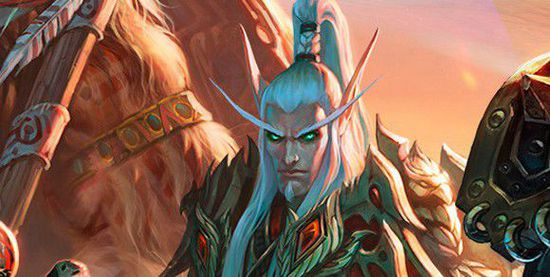 什么，第一次知道我们的摄政王小强其实是个战士？洛瑟玛·塞隆是原远行者成员，一个大部分都是猎人的组织。不过在游戏里，如果你去攻城打过银月城，或者在仔细看过他的战斗动作，你就会发现这个手握长剑的摄政王简直是一台无情的绞肉机。血精灵这个种族主要以血骑士，猎人和法师组成，作为战士的洛瑟玛居然能够成为阵营首领实在是令人刮目相看，而在熊猫人之谜里，我们也充分见识到了他智勇双全的实力。可惜的是，除了萨洛瑞安·曦寻者外（这人已经死了），血精灵里很难找到其他值得称道的战士。至于萨洛瑞安，他的剑比他的本人更有名气——奎尔德拉。即巫妖王之怒3.3版本里加入的破碎的剑柄系列任务最后奖励，在太阳井净化这把史诗级的长剑后你还会获得一个成就——颅中剑。 那么，很可惜，尽管是阵营首领，尽管有着卓越的成就。但是我们的洛瑟玛·塞隆依然只能排在最后一位。首先，他远行者的身份让我依然对这个角色的正式职业依然保有疑问。其次，在这份排名里，我确实觉得他无法和其他人相竞争。他无疑是一个优秀的战士，只是还不能称之为个中高手。特别，正是他在熊猫人之谜里的突出表现才让他上了这份榜单，否则我宁可选择萨洛瑞安。
雷吉纳德·温德索尔元帅 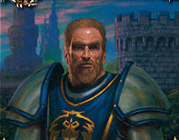 没听说过？也罢。雷吉纳德·温德索尔是这里排名最低的人类，但他的上榜也绝对名副其实。做过奥妮克希亚团本开门任务（潜藏者任务线，揭露女伯爵卡特拉娜·普瑞斯托的真面目，这个任务已被取消）的玩家一定还有印象——你要将这个裸男一路送到他的装备旁边，看他摇身一变成为钢铁侠~（好吧也许没有那么夸张）如果没有雷吉纳德元帅，联盟可能会永远地被奥妮克希亚蒙在鼓里。他指认出了女伯爵的真面目，破坏了黑龙的阴谋，最后也光荣地为国捐躯。他的上榜当之无愧，比起榜单上的其他人类战士，他确实无法继续提高自己的排名。
加洛德·影歌 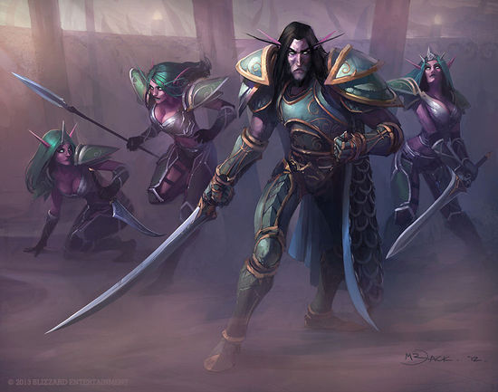 在这个排名里，加洛德击败了自己的导师克尔塔罗斯·鸦冠。在燃烧军团入侵时，加洛德·影歌承担起引领暗夜精灵的重任，也正是加洛德身先士卒，与阿克蒙德面对面的较量，将自己的性命抛之脑后。作为暗夜战士，他更擅长指挥和谋略（当然他也有很强的战斗力，只是力量绝对不是暗夜精灵的强项）。可惜的是，这位在上古之战后活了一万年的战士，没有像经典人物那样拥有一个属于自己的传奇。
纳兹戈林将军 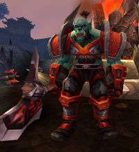 纳兹戈林将军，如果没有决战奥格瑞玛，他很有可能无法登上这个排行榜。但是即便是没有加尔鲁什·地狱咆哮，恐怕他一样能从一个传令兵成为一个部落将军。在这场首领战的最后，他维护了战士的荣誉。这场战斗里纳兹戈林会切换姿态，会冲锋，会震荡波，有双手武器，也有盾牌。他用自己的一切证明了自己是一名真正的兽人战士，个人认为，他在这里的名次非常恰如其分。
贝恩·血蹄 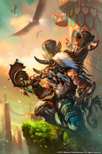 如果我说，贝恩·血蹄不是这份排名上唯一的血蹄算不算剧透？老牛凯恩死后，贝恩继承了牛头人酋长的职位。而贝恩本身在与加尔鲁什的酋长继任决斗（Mak'gora）以及野性图腾的叛乱中丧生。贝恩则平息了这场混乱，并在决战奥格瑞玛里作为沃金身边的二号人物带领雷霆崖起义。 贝恩年轻的时候受过不少苦（记得魔兽争霸3里营救贝恩的任务么？），阅历也不够丰富。这位直率的战士还有很长的路要走。
珊蒂斯·羽月 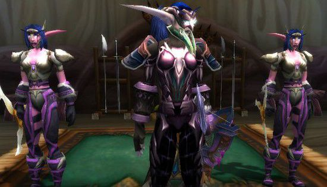 暗夜精灵哨兵部队游侠将军珊蒂斯·羽月。她手持长弓，身披板甲，是一个出色的暗夜精灵战士。她作为泰兰德的战地统帅，在这一万多年的时间里训练了无数暗夜精灵士兵，可能也是这份排名里实战经验最多且尚在人间的战士（其中包括加洛德·影歌）。她允许狼人加入哨兵部队的决定非常大胆，而正是狼人的加入才得以使哨兵部队顺利地击退菲拉斯的娜迦和部落。珊蒂斯是哨兵部队的象征与灵魂。唯一的遗憾是，这位将军对泰兰德和玛法里奥过于惟命是从，从来没有过将在外君命有所不受的果敢和独立。如果今后她的故事继续发展，可能还可以往上再排几位。
穆拉丁·铜须 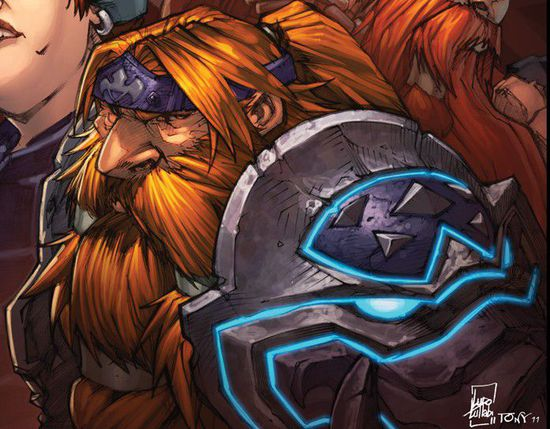 细数战士的排名里怎么可能没有勇敢的矮人！而谈到矮人战士，穆拉丁则是最典型的代表。他是阿尔萨斯的老师，将自己最得意的剑术倾囊相授，结果却在诺森德里被拔起霜之哀伤的阿尔萨斯一剑刺倒。所幸的是，在魔兽世界巫妖王之怒的资料片里，我们知道这位矮人并没有死在剑下，最终他也在诺森德冰矮人的帮助下回忆起自己的身份，回到铁炉堡，接过逝去兄长的事业，同茉艾拉·索瑞森和蛮锤领主弗斯塔德·蛮锤一起统治新生的铁炉堡。
布洛克斯西加·萨鲁法尔（布洛克斯西加·红斧） 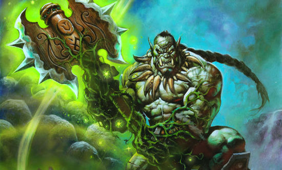 这个名单上的人物逐渐由史诗走向传奇。布洛克斯西加作为一个兽人老兵出战了全部三次战争，这种经历已经足以让他在排在前列，更何况他面对面挑战过黑暗泰坦——萨格拉斯。他没有战胜这终极的邪恶，但是作为一个凡人，他直面着邪恶，亲手击伤了这个堕落的泰坦。做一辈子的懦夫，亦或是一分钟的英雄？布洛克斯西加用他的行动证明了，他这一生绝对无愧英雄这个名号。布洛克斯没有凭借任何泰坦之力就一次又一次地击退了恶魔，成为了艾泽拉斯大陆的传奇！
空军上将凯瑟琳·罗杰斯 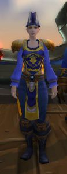 也许你会因为她排在布洛克斯西加之前而感到诧异，那么让我来为你细细道来。首先，布洛克斯西加的英勇主要体现在他直面邪恶的这一次事件上，他的传奇也因此划上了句号。而我们的空军上将罗杰斯的传奇则在继续。在这一个资料片里，她即成为了一个战犯/英雄（依照你的个人观点）。在部落袭击南海镇的行动中，她失去了所有的亲人。部落就是她的仇人，不管对方是亡灵还是兽人，是牛头还是地精。在这样的仇恨之下，她能毫不迟疑地下令，用炮火击杀那些企图弃船逃走的，而且手无寸铁的兽人水手。 凯瑟琳·罗杰斯是一台精密的战争机器，不会犯下任何一次错误。她能够以战养战，旧的仇恨可以在她的手下滋生出新的萌芽。而且，她的影响并没有完全显现——和加尔鲁什一样，她发现可以利用煞的力量来对付敌人，还准备将此付诸实际。实际上，只要能击败部落，她会不择手段 —— 可以想象，瓦里安放弃剿灭部落大好实际时她眼里露出的不解和失望。作为空军上将，她肯定不会就此作罢。 目前，除了领导力，我们并没有见识过她作为一个战士的本领，因此她的排名没有继续上升。但是她的上升空间很大，这也是我将她排在布洛克斯西加前面的原因。她还能够创造历史，担负着血海深仇，并以一个战士的姿态前进。她既有资源又有地位，以及不剿灭部落誓不罢休的动力。她将成为今后魔兽故事中的精彩看点。
督军扎伊拉 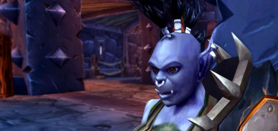 在大灾变里，扎伊拉带领着龙喉氏族起义军协助加尔鲁什在暮光高地的海岸边上建立了基地。自此也成为了龙喉氏族的领袖，一只真正完全属于加尔鲁什的兽人氏族（他们并不是因萨尔而加入部落）。这也使得我们在决战奥格瑞玛里并没有看到龙喉氏族的起义，扎伊拉本人也骑着始祖龙迦拉卡斯成为我们的敌人，这场战斗相信也让很多玩家头疼不已。 作为龙喉氏族的督军，她的重要性不言而喻。她为部落捕捉了很多始祖龙，驯服并将其作为战争机器。没有她，加尔鲁什的外围战斗力会大幅度降低。她崛起于龙喉氏族的内部起义，而这只氏族很可能象征着加尔鲁什野心的正式开始。加尔鲁什自此有了拥有完全属于自己的兽人氏族。在扎伊拉之后，马尔考罗克和黑石也陆续加入加尔鲁什的部落。 再进一步说，扎伊拉并未战死在决战奥格的战役里，而且，她还随着加尔鲁什穿越黑暗之门来到了德拉诺。扎伊拉拥有恶魔之链这件强大的法器（附属于恶魔之魂上的锁链），大部分龙类实际上都是被这条恶魔之链所击垮。显然，如果将这件法器用在其他生物上会产生更为致命的效果。
凯恩·血蹄 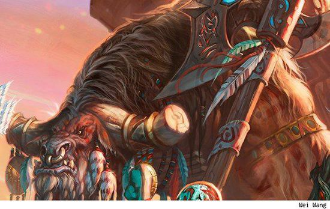 老牛可以称得上是部落牛头人之父。他曾带领着自己的部族，以血蹄之名在贫瘠之地与半人马做着殊死搏斗。他也是少数意识到牛头人无法继续以游牧民的身份继续在艾泽拉斯上游荡——遗忘了大地母亲的力量，四分五裂散落在世界各地而被逐个击破。凯恩在萨尔的协助下，终于梦想成真，将大部分牛头人部族重新团结起来，并组成了现在的牛头人部落。没有凯恩就没有繁华开放的雷霆崖，甚至不会有今天的部落。 凯恩拥有不俗的力量，但使他排在这前列的并非此份力量。在前面介绍的战士中，也有着能和老牛一较高下的战士。凯恩对部落及牛头人的贡献提高了他在榜上的排名。凯恩和萨尔拥有相同的理想——建立一个没有隔阂，众生平等的新部落。这一思想也让萨尔对凯恩以兄弟相称。凯恩在和雷克萨在杜隆塔尔并肩作战时，让他度过难关的永远是心中对子民以及贝恩的爱。从另一个角度来说，凯恩是加尔鲁什成为酋长的最大障碍——无论是在精神上，还是在力量上。加尔鲁什也不敢小瞧这个敢于挑战他酋长地位的老牛，而在凯恩因中毒而死前，他已经证明了自己的力量。 可惜的是，老牛没有认清玛加萨·野性图腾的威胁。可能老牛已经太老，已经厌倦了部族内部的争斗，不希望对自己的族人下手。结果，他的仁慈葬送了他的生命，部落也因此失去了一位领袖。 部落每一个牛头人的今天都是拜凯恩所赐，沃金也是依照着凯恩的理想来重建部落。凯恩是部落牛头人的代表，他死了，但是他永远活在人们的心里。
奥格瑞姆·毁灭之锤 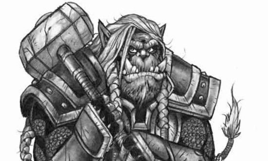 奥格瑞姆·毁灭之锤是旧部落里第一个自立为酋长的兽人，后将自己的护肩，战甲以及武器传给萨尔。但是，奥格瑞姆并不是一个一般的战士。他既非一个狂热的好战者，也不是一个没头脑的傀儡。他没有半句怨言地完成酋长嘱咐下的每一项任务，为的就是积累实力，完成最后一击。他利用古尔丹对力量的渴望而崛起，击杀黑手，消灭了大部分暗影议会成员，并广结英豪。他从来不会独占胜利的果实，也从来不将胜利完全归功于自己。他放了古尔丹一条生路，而古尔丹创造的死亡骑士则让他能够对抗联盟的法师/牧师大军。不过此时，由于术士对这些灾难造物的过度控制，他也为自己的末路埋下了伏笔。 毁灭之锤的一生可以用很多极端的词语来形容：聪明，才干，狡诈。他在兽人里是一个另类，不如其他兽人一般从不屈服，为了身体和地位可以屡次妥协。他用吹捧的方法拒绝了酋长给予的玛诺洛斯之血，而不是固执地坚持什么立场。他遵从黑手的每一项指令（虽然黑手实为古尔丹的玩偶），身先士卒，手染鲜血。而后，在亲手杀死黑手之后（这也证明了以他的力量完全可以不必服从黑手的命令），他审时度势，明白在暗影议会的多年统治下，德拉诺已经不再适合生存，于是决定继续与人类为敌。他甚至对一些罪行放任不顾，让龙喉氏族使用恶魔之魂的力量来奴役阿莱克斯塔萨，以此来控制红龙军团——因为这样做，对他有利。 最后，在黑石山，他击败了人类最强大的战士。但这也是他所犯下的最大错误。（无论你觉得他是以计取胜，还是说只是使用了下三滥的伏击）作为一个狡诈的战士，他获得了兽人的爱戴，但与此同时，同样敬爱自己领袖的人类用怒火席卷了剩余的兽人。奥格瑞姆用自己还有全体兽人为代价取得了这场战争的胜利。在被套在锁链里前往洛丹伦的途中，虽然他成功逃走，最后却发现兽人对他留下的只有憎恨和恐惧。 在奥格瑞姆这一生的最后日子里，他所做的是培养萨尔成为自己的接班人。不过萨尔并没有继承到奥格瑞姆的"特点"。最后，他死于现在的落锤镇—— 一个慌张的人类用长枪从身后击穿了他——不知道这是否在他预想之中。或许当年在黑石山上，死在另一个人类手里才是他更好的结局。
加尔鲁什·地狱咆哮 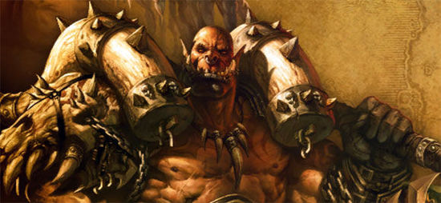 对于这个人物，我们已经写过太多次。在这里，我只做一个总结。加尔鲁什是一个集合了技艺，战术，力量，诡诈的结合体。爱他或者恨他，小地狱咆哮都是这一代兽人战士中最为杰出的代表。他既有毁灭之锤为了荣耀而做出的隐忍和务实，也有格罗玛什对胜利的冲动和嗜血，这使得加尔鲁什也成为了一代风流人物。决战奥格瑞玛里的失败并没有给他的故事画上句号，反而是另一段传奇的开始。
瓦里安·乌瑞恩 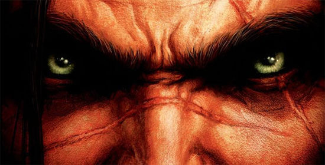 瓦里安，从一个冲动的二货狂战，到一个睿智的人类领袖。关于他的故事我们也写过无数遍。他和加尔鲁什的某次交锋最后以平局收手（当时加尔鲁什正要撤退）。瓦里安在黑龙事件回归之后改变了逐步改变，他所经历的事件以及他的决定和人格也使他的排位在加尔鲁什之上。其一，加尔鲁什的计谋和战术都被瓦里安一一化解。其二，他不仅是暴风城人类的领袖，更是领导整个联盟打赢战争的卓越首脑。其三，我觉得他比加尔鲁什厉害。加尔鲁什追求的是极致的力量，而瓦里安则学会了借力打力。 瓦里安最大的问题就是他和小王子安杜因·乌瑞恩之间的关系，不过，这就是题外话了。
瓦罗克·萨鲁法尔 - 萨鲁法尔大王 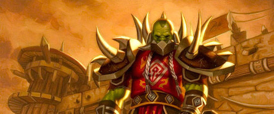 啧啧，终于到了我们盘点的顶端。萨鲁法尔大王一路披荆斩棘来到这里，可以还无法抵达金字塔的最顶端。在决战奥格瑞玛里，他单枪匹马杀入加尔鲁什的地下堡垒，离加尔鲁什的王座只有几步之遥。就凭着这一身本事，瓦里安也必须给他让座。不过当年在冰冠堡垒，相信我们的人类国王并不是出于恐惧才让萨鲁法尔带走他的儿子的遗体——萨鲁法尔的名望已经远远超过阵营。 此后，萨鲁法尔带着儿子的遗体回到了纳格兰，将爱子葬在了那美丽的天地之间。
格罗玛什·地狱咆哮 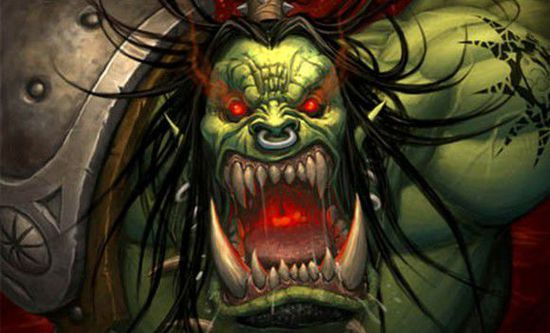 恶魔之血封印了兽人的命运，格罗玛什则解开了这道封印。 谈起兽人，就不能不谈及格罗玛什·地狱咆哮。格罗姆可能是世上肉搏能力最强的兽人战士 - 毁灭之锤？萨鲁法尔？布洛克斯西加？加尔鲁什？可能他们都不是这个击败半神塞纳留斯，击杀深渊领主玛诺洛斯传奇剑圣的对手。这位战歌氏族的化身代表了两部传奇 - 他第1个喝下恶魔之血，成为恶魔的奴隶，同时又杀死了玛诺洛斯，解开了兽人的诅咒，即便代价是他自己的生命。很难想象没有格罗玛什的兽人会是怎样一个种族。好在，我们可以在德拉诺之王里找到这个问题的答案。不过，这一次的格罗玛什恐怕不会是我们所知的那个格罗玛什了。 他是一个嗜血的风狂战士，曾经带着兽人冲入沙塔斯，毁灭了这座圣城；他也是一个疲惫的老兽人，为萨尔指明了他的命运。他在这一生了经历了无数高潮和低谷，以致我们难以评价他究竟是一个什么样的战士。他借助恶魔之力击败了塞纳留斯，又和深渊领主同归于尽，他的利斧血吼见证了他一生的传奇。他所展示的实力，他的传奇故事，他结束兽人诅咒的果敢，使他成为了我们榜单上的第二战士！ 那么，下面让我们来看看，谁是艾泽拉斯的第一战士。
安度因·洛萨 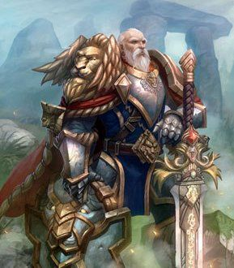 洛萨，人类联盟的传奇。同样，关于他的人物剖析也有很多很多，毕竟从经典旧世开始，我们就认识到了这个人物。洛萨排在第1的理由很简单，他没有犯过名单上其他人所犯过的任何错误。他没有被苦恨所吞噬，为人民而战，用生命捍卫着自己的同胞。他没有敌我不分落入陷阱，为了避免同胞继续受罪，他果断的将剑指向了麦迪文——尽管他俩已是老友。他从未以荣耀和原则作为代价换取胜利。他深爱自己的人民，从未主动让战火烧向他们。他没有被愤怒战胜，更没有为了追求力量而饮下什么恶魔之血，因为，力量对于安度因·洛萨而言并不重要。 他为同胞而生，为同胞而战，最后为同胞而死，无关荣耀，无关征服，无关自己的私利。他的死证明了他只是一个普普通通的凡人。安度因·洛萨，一个简单的战士。安度因·洛萨，他即是艾泽拉斯的战士。